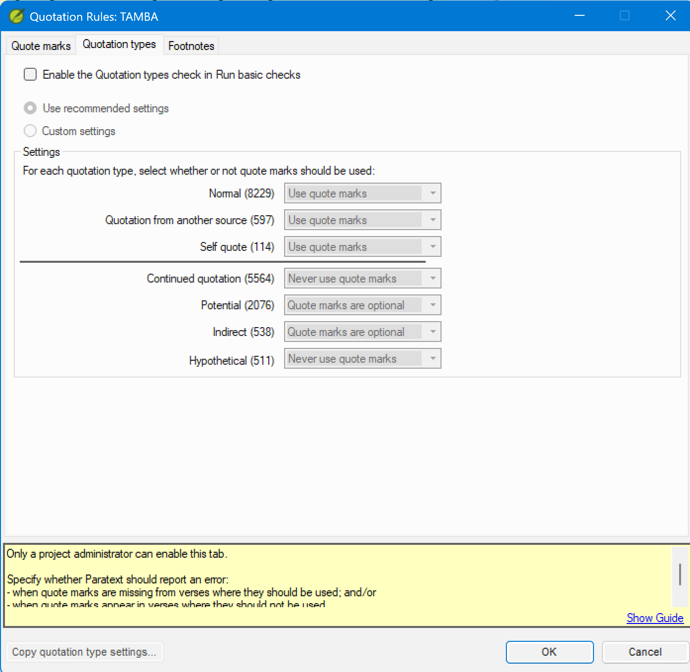

Lesson 3 — Configuring Quotation Types¶
Estimated time: 60 minutes
This lesson uses the
tambafictional project. See the course README for its quotation conventions.
Purpose: The Quote marks tab from Lesson 2 tells Paratext which characters are quote marks; it does not say when marks should appear. On a real project a language may mark narrator citations one way and self-quotes another. This lesson gives the check its second input — the rules that decide, per kind of speech, whether marks are expected — so it stops flagging correct text and starts catching real omissions.
Learning objectives¶
By the end of this lesson you will be able to:
- Explain what the Quotation types tab controls and why it is separate from the Quote marks tab.
- Configure each of the seven quotation type settings for a given language's conventions.
- Distinguish between recommended settings and custom settings.
Connect¶
You have told Paratext which characters are quote marks. But knowing the characters is not the same as knowing when they should be there.
✏️ Reflection. Think about the language you support (or Scripture in a language you know well):
- When the narrator quotes the Old Testament, does that citation get dialogue quote marks, or is it left as plain text?
- When the text reports speech indirectly — "He said that the road was long" — should quote marks appear at all?
- If a checker flagged every indirect-speech verse as "missing quotation mark," would that be the translation's fault or the check's setup?
Those are exactly the distinctions the Quotation types tab exists to encode. Hold your answers.
Content¶
This is the second half of configuring the check for the Translation Tools competency. Lesson 2 was about characters; this lesson is about expectations. Getting the type settings right here eliminates whole categories of false positives before you ever begin triage in Lesson 4.
The Quotation types tab controls whether Paratext expects quotation marks for each semantic category of speech. This is independent of which characters are used (that is the Quote marks tab's job). The Quotation types tab answers: for this type of speech, should marks always appear, never appear, or is either acceptable?
Navigate to: ☰ > Project settings > Quotation Rules > Quotation types tab.

Enabling the check (administrator only)¶
At the top of the tab is the checkbox Enable the Quotation types check in Run basic checks. Only a project administrator can check this box — the status bar confirms: "Only a project administrator can enable this tab." Any user can configure the radio buttons and drop-downs below; it is only the enable checkbox that requires administrator access. If you are not an administrator, configure the settings in this lesson, then ask your project administrator to check the enable box.
WARNING The Quotation types check only checks first-level quotes in non-Deuterocanonical books.
The seven quotation types¶
The tab lists seven types. Each type has a drop-down with three active options (plus the default):
- Use quote marks — Paratext expects marks to be present; missing marks are flagged as errors.
- Never use quote marks — Paratext expects no marks; unexpected marks are flagged as errors.
- Quote marks are optional — either is acceptable; the check does not flag errors for this type.
A count in parentheses appears next to each type name showing how many occurrences of that type are in your project scope — useful for gauging how much a given setting will affect your results.
NOTE Even if all types are set to Optional, quotes that do not correspond to any recognized quotation type will still be reported.
| Type | Meaning |
|---|---|
| Normal | Direct speech between characters in the narrative |
| Quotation from another source | A narrator or character quotes scripture, another text, or a source outside the narrative |
| Self quote | A character quotes their own earlier words |
| Continued quotation | A speech that continues across a paragraph break using a continuation convention |
| Potential | Paratext identifies this as a possible quotation but cannot determine the type |
| Indirect | Reported speech: "He said that the road was long" (no direct marks in the source) |
| Hypothetical | Speech in a conditional or hypothetical frame: "If I were king, I would say…" |
Recommended settings¶
When you first open the Quotation types tab, Paratext offers Recommended settings. These are sensible defaults for most translations:
| Type | Recommended setting |
|---|---|
| Normal | Use quote marks |
| Quotation from another source | Use quote marks |
| Self quote | Use quote marks |
| Continued quotation | Never use quote marks |
| Potential | Quote marks are optional |
| Indirect | Quote marks are optional |
| Hypothetical | Never use quote marks |
If your language follows these conventions, select Use recommended settings and you are done. If your language diverges, select Custom settings and adjust each type's drop-down individually.
NOTE The values Paratext pre-fills under "Use recommended settings" are set by Paratext —
verify what appears in your version before relying on the table above as the exact recommended
defaults. (The table above reflects Paratext 9.5 defaults confirmed on a built tamba project;
earlier drafts of this lesson had Quotation from another source and Indirect backwards — both
actually default to a "marks expected/optional" leaning rather than "never," which is why Tamba's
Exercise 3.2 customization list below touches more rows than you might expect.)
TIP Complete the settings on both the Quote marks tab and the Quotation types tab before clicking OK — the OK button saves all changes from both tabs at once.
If another project in your organization uses the same quotation type conventions, click Copy quotation type settings... at the bottom of the dialog to import that project's settings rather than configuring each drop-down manually.
NOTE A dividing line in the dialog separates the first three types (Normal, Quotation from another source, Self quote) from the lower four (Continued quotation, Potential, Indirect, Hypothetical). The upper group covers standard direct speech; the lower group covers special speech categories.
Key takeaways
- The Quotation types tab controls whether Paratext expects marks for each category of speech — separate from, and complementary to, the character configuration on the Quote marks tab.
- Use recommended settings as a starting point; switch to Custom settings only when the defaults produce incorrect results.
- Configuring types correctly reduces triage work in Lesson 4 by eliminating whole categories of expected exceptions before the check runs.
- Only a project administrator can enable the check — if you are not one, configure the settings and ask an administrator to enable it.
Challenge¶
You are configuring the Tamba project's quotation types after a working session with the translation team. Each exercise produces settings a mentor can check against Tamba's conventions.
Exercise 3.1 — Read Tamba's current quotation types¶
Open the Tamba project and navigate to ☰ > Project settings > Quotation Rules > Quotation types tab.
✏️ Before changing anything, record the current setting for each type:
| Type | Current setting |
|---|---|
| Normal | ? |
| Quotation from another source | ? |
| Self quote | ? |
| Continued quotation | ? |
| Potential | ? |
| Indirect | ? |
| Hypothetical | ? |
Tamba's settings should match the recommended defaults above. Confirm this before moving on.
Exercise 3.2 — Customize quotation types for Tamba¶
After reviewing Tamba's text with the translation team, you have determined the following four things:
- Tamba does not mark narrator scripture citations with quote marks — these appear as plain narrative text.
- Tamba's First level uses a Quote Continuer at new paragraph: a long First level speech
repeats the opening mark
“at the head of each continued paragraph rather than closing and reopening. (Second and Third level have no continuer — those close and reopen fully instead, so they never produce a "Continued quotation" instance.) - When a character quotes their own earlier words (a self-quote), Tamba treats it the same as any other direct speech: it must be marked with quotation marks.
- Tamba never marks reported/indirect speech (e.g. "He told them that the harvest was near") — no quote marks appear at all.
Step 1 — Check the current recommended settings against items 1, 2, and 4. None of the three
match Tamba's conventions:
- Quotation from another source = Use quote marks by default — Tamba doesn't mark narrator
citations, so this must change to Quote marks are optional (or the check will flag every
unmarked citation, including Luke 4:18, as a missing quote).
- Continued quotation = Never use quote marks by default — Tamba's First level continuer
means a mark (“) is expected at the head of every continued paragraph; "Never use quote
marks" would flag that expected continuer as an error. This must change to Use quote marks.
- Indirect = Quote marks are optional by default — that wouldn't flag a translator who
mistakenly adds marks to reported speech. Since Tamba's convention is that indirect speech is
never marked, set this to Never use quote marks so a stray mark there gets caught.
Step 2 — Check the current recommended setting for Self quote. Unlike the other three, Self quote already defaults to Use quote marks — which is exactly what Tamba needs (item 3). No change required here; confirm it and move on.
Click Custom settings at the top of the tab. This switches all drop-downs to editable mode. Change Quotation from another source from Use quote marks to Quote marks are optional, change Continued quotation from Never use quote marks to Use quote marks, and change Indirect from Quote marks are optional to Never use quote marks. Leave Self quote at Use quote marks — it was already correct.
The correct final settings for Tamba:
| Type | Correct setting for Tamba | Changed from default? | Reason |
|---|---|---|---|
| Normal | Use quote marks | No | Tamba marks all direct speech |
| Quotation from another source | Quote marks are optional | Yes — default is Use quote marks | Narrator scripture citations are not marked |
| Self quote | Use quote marks | No — already the default | Tamba treats self-quotes the same as Normal speech |
| Continued quotation | Use quote marks | Yes — default is Never use quote marks | Tamba's First level continuer means a mark is expected at every continued paragraph |
| Potential | Quote marks are optional | No | Uncertain cases should not generate errors |
| Indirect | Never use quote marks | Yes — default is Quote marks are optional | Reported speech is not marked |
| Hypothetical | Never use quote marks | No | Hypothetical speech is not marked |
Before you re-run: the Quotation types check itself only runs if a project administrator has ticked Enable the Quotation types check in Run basic checks (see Content section above). Exercise 1.1 deliberately left this unticked. If it is still unticked, ask your administrator to enable it now — none of the settings below will affect the check results until they do.
Check your work:
- Save and re-run the check. Phase A's self-quotes are already correctly marked, so leaving
Self quote at its default produces no new flags on tamba. (If a self-quote were missing
its marks, this setting is what would catch it — that's exactly the behavior Exercise 4.1
exercises in Lesson 4.)
- Confirm that Luke 4:18 (narrator Isaiah citation) is not flagged, now that Quotation from
another source = Optional means no marks are required there.
- Check a verse with indirect speech and confirm it is not flagged, now that Indirect = Never
use quote marks matches Tamba's convention of leaving reported speech unmarked. Then confirm
that a stray mark deliberately added to an indirect-speech verse (try it on a scratch copy)
is flagged — that's the difference Optional wouldn't have caught.
- Confirm that Matthew 5:4–7:27 (every paragraph reopening with the First level continuer “
as the sermon runs on) is not flagged, now that Continued quotation = Use quote marks
recognizes the continuer as expected rather than treating it as a stray mark.
✏️ Produce this (a mentor will review it). Write one sentence per type explaining why Tamba diverges from (or keeps) the recommended default — three diverge (Quotation from another source, Continued quotation, Indirect), one keeps the default (Self quote). A mentor will compare your final settings table to Tamba's conventions.
Change¶
Self-assessment — can you explain it to a colleague?
- A language never uses dialogue quote marks for indirect speech ("He said that the road was long"). Which quotation type covers this, and what setting is correct?
- The recommended settings have "Continued quotation" set to "Never use quote marks". Your language uses a Quote Continuer at new paragraph — an opening mark repeated at the start of each continued paragraph. Does this conflict with the recommended setting?
- A check result appears for a narrator OT citation verse. You have "Quotation from another source" set to "Use quote marks". Is this a real error or a configuration issue? What is the correct action?
You should be able to say: (1) Indirect speech — set it to Never use quote marks: the check reports an error if marks appear unexpectedly and stays quiet when they are absent. (2) Yes, it conflicts — "Never use quote marks" expects no marks at the start of a continued paragraph, so a repeated opening mark would be flagged; change Continued quotation to Quote marks are optional or Use quote marks depending on how consistently the continuation mark is used. (3) A configuration issue — if the language doesn't mark narrator citations, change "Quotation from another source" to Quote marks are optional and re-run; fix the configuration rather than editing correct text.
✏️ Take it to your context. For one real language you support, fill in the seven-type table with the setting you'd choose for each, and flag any type where the language diverges from Paratext's recommended default.
Next step. You have now given the check both of its inputs — characters (Lesson 2) and expectations (this lesson). In Lesson 4 you put a configured project to work: reading real results, telling real errors from configuration problems, and clearing the check to zero.
Previous: Lesson 2 — Setting Up Quote Marks · Next: Lesson 4 — Interpreting and Clearing the Check